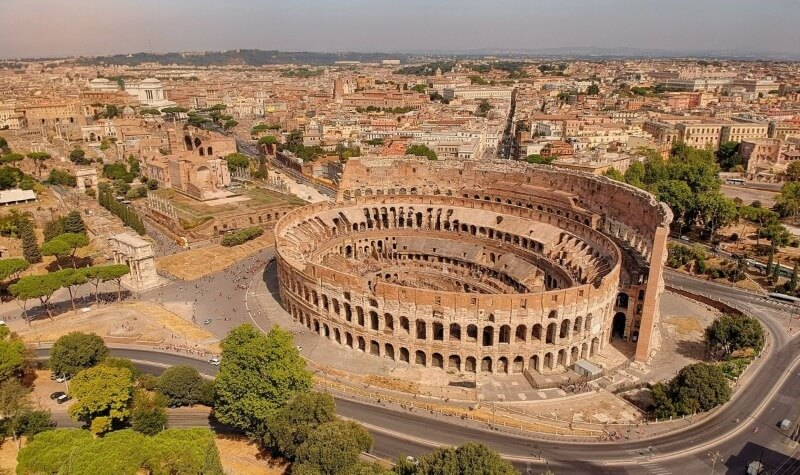
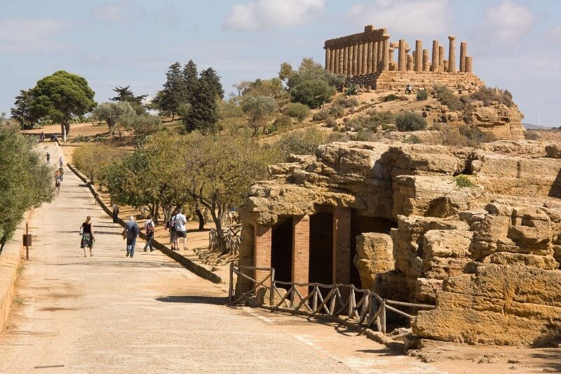
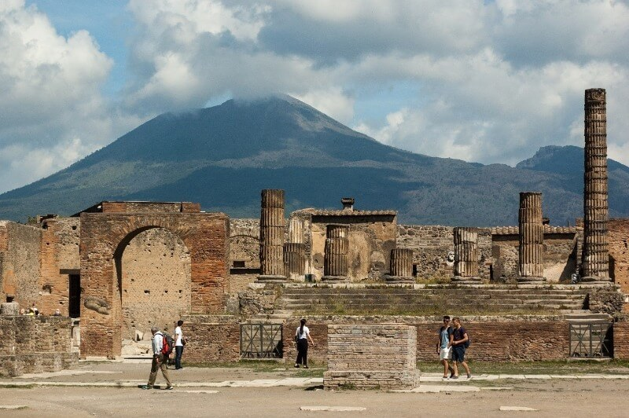
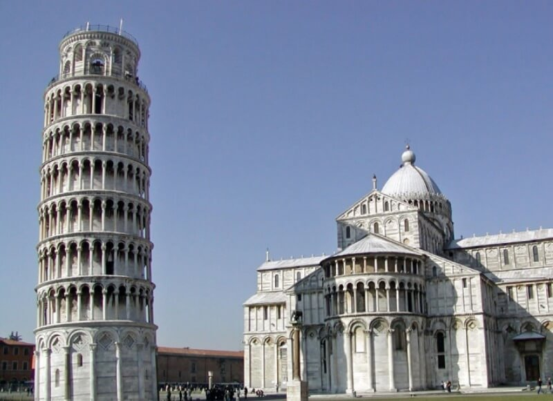
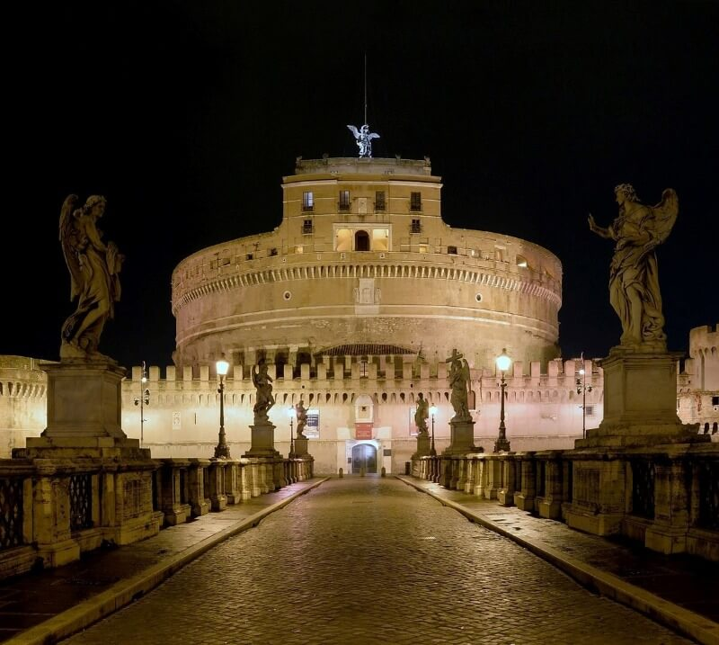
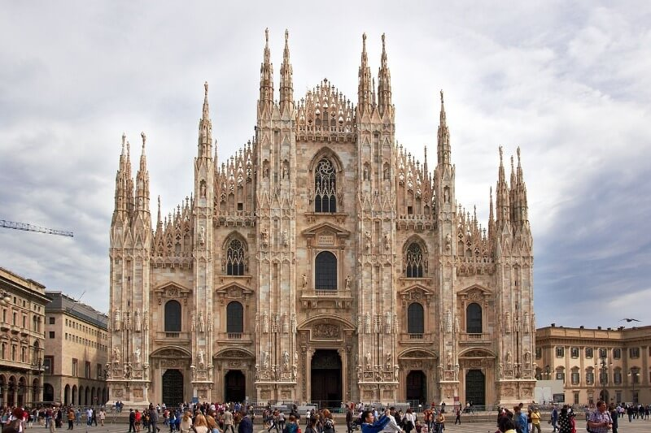
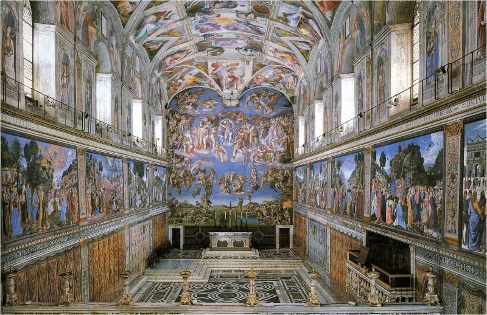

МЫ ДУМАЕМ ЧТО ЭТО СТРАНА ОЧЕНЬ ПОДХОДИТЬ ДЛЯ ПУТЕШЕСТВИЕ И НАДЕЕМСЯ ЧТО ВАМ ПОНРАВИТСЯ НАШ ВЫБОР
ДОСТОПРИМЕЧАТЕЛЬНОСТИ ИТАЛИИ – 10 ЛУЧШИХ МЕСТ, КОТОРЫЕ СТОИТ ПОСЕТИТЬ
О, прекрасная Италия! Страна Древнего Рима, романтичной Венеции, современного Милана и живописной Тосканы. Уже на протяжении многих лет эта страна привлекает миллионы туристов со всего мира огромным количеством культурных и исторических достопримечательностей. Музеи, соборы, дворцы, уникальные пейзажи, сокровищницы и галереи – все это заставляет влюбиться в Италию раз и навсегда. Конечно, тяжело в одной статье собрать абсолютно все важные памятки странных городов, однако мы попытаемся. Ниже мы предлагаем вам 10 самых популярных достопримечательностей и самых красивых городов Италии. Гарантируем, что вы точно не останетесь равнодушными к увиденному.
Колизей
Начинать рассказ о достопримечательностях Италии необходимо именно с древнего Колизея. Масштабный полуразрушенный амфитеатр, который был построен еще до нашей эры, стал символом Римской Империи и остался важной частью всех туров в Италию.
Ежедневно около достопримечательности приходят тысячи туристов со всего мира. Древний Колизей много веков назад мог вместить себе более 50 тысяч человек. Согласитесь, что это величайшее архитектурное творение в итальянской истории.

Сегодня подобные здания строятся при помощи специальных машин и техники. Но даже при такой подготовке представить, как соорудить огромный амфитеатр, невозможно. А теперь задумайтесь, как это могли сделать древние римляне. Тысячи простых людей трудились для того, чтобы сегодня мы могли увидеть настоящую мощь и силу империи.
Внешне амфитеатр представляет собой высокий эллипс длиной почти 200 м. Благодаря арочному принципу постройки Колизей выдерживает нагрузку в несколько тонн, что делает его максимально прочной постройкой.
Никакие природные катаклизмы, включая землетрясения и сильные ветра, а также вмешательство людей (войны) не смогли навредить амфитеатру. За свою древнюю историю и прочность Колизей заслуженно считается одним из семи чудес света.
Долина Храмов
Отправляясь в путешествие по городам Италии, невозможно проехать Сицилию. Именно здесь вы увидите прекрасную долину, состоящую из древних храмов, которые были обнаружены в результате раскопок. Многие из этих сооружений являются доисторическими и были возведены еще до нашей эры.
Если быть точнее, долина храмов находится в городе Агридженто. В месте раскопок стоит потрясающая атмосфера. Вы можете прочувствовать всю величину античности, любуясь древними храмами античных богов.
Словно все мифические персонажи, о которых мы читали в детстве, восстают с изображений, высеченных на стенах руин. Туристы могут увидеть множество древних храмов: Зевса, Геркулеса, Юноны, Вулкана. Наибольший интерес вызывает храм великого Зевса да, который был возведен еще в V веке до нашей эры.

Помпеи
Трагичная история города Помпеи поражает и удивляет многих туристов уже на протяжении нескольких веков. Отправляясь в Италию зимой, когда температура воздуха максимально комфортна для долгих прогулок, обязательно загляните в этот древний мертвый город.
Когда-то давно Помпеи были полностью уничтожены вулканом. Раскопки старинного города начались только спустя 17 веков.
Везувий погубил под своим пеплом несколько сотен человек, площади, храмы, дома и многое другое, что сегодня было бы великой архитектурной ценностью. Благодаря работам сотен археологов сейчас вы можете прогуляться по городу, который был спроектирован и построен более 2000 лет назад. Археологи смогли достать из-под пепла:
фрески
мозаки
фасады
скульптуры из мрамора
остатки храма

Пизанская башня
Наверняка, все вы слышали об оригинальной слегка наклоненной башне, которая находится в городе Пиза. Это сооружение является одной из знаковых достопримечательностей Италии. Туристы со всего мира приезжают, чтобы сфотографироваться на фоне падающей башни в разных иногда смешных позах.
Чем обусловлен наклон сооружения? Дело в том, что слегка падающая башня вовсе не задумка строителей. Это всего лишь нелепая ошибка архитектора, которую он допустил при расчетах. На самом деле Пизанская башня является ничем иным, как колокольней стоящего рядом собора Санта-Мария Ассунта. Этот архитектурный шедевр имеет арочную конструкцию и изысканные барельефы. Как и положено колокольне, Пизанская башня имеет массивную звонницу со старинным колоколом.
Сама по себе постройка падала на протяжении нескольких веков. Конечно, это не было так заметно. Причиной наклона стали расхождения в грунтах и ошибки при закладке фундамента башни. Только в XXI веке ученые совместно с архитекторами смогли остановить падение конструкции.

К сожалению, если вы едете прогуляться по Пизанской башне самостоятельно, вам доступны исключительно прогулки вокруг достопримечательности Италии. Побродить внутри постройки категорически запрещено. Несколько раз в день, правда, там проводят экскурсии (каждая длится не более получаса). Однако учтите, что все свои вещи придется оставить внизу. В противном случае увеличивается нагрузка на постройку.
Если вы раздумываете, что посмотреть в Италии с детьми, Пизанская башня все же не лучший вариант. Ее посещение возможно только в том случае, если ваш ребенок старше 8 лет.
Замок Святого Ангела
И снова возвращаемся в столицу Италии Рим. Интересные места в этом городе не ограничиваются древним Колизеем. Еще одной достопримечательностью считается древний замок Святого Ангела, который был построен и еще 135 году. Издавна постройка меняла свои функции. Она служила:
гробницей;
резиденцией;
архивом;
тюрьмой;
непосредственно замком.
Сегодня внутри здания туристы могут посетить исторический музей с огромным количеством экспонатов. Приготовьтесь долго ходить – в замке Святого Ангела более 45 комнат, которые порой напоминают страшно запутанный лабиринт.

Миланский Собор
Теперь давайте переместимся в Милан. Город, интересные места в котором встречаются на каждом шагу. Сегодня Милан является столицей мировой моды и одним из самых крупных и популярных мегаполисов Италии. Здесь вы можете прогуляться по магазинам и насладиться деловой жизнью страны.
Если вы ищете исторические объекты, ни в коем случае не упустите возможность посетить Миланский кафедральный собор. Он является символом города и представлен в виде массивного сложно сконструированного здания в готическом стиле. Одновременно в Миланском соборе могут находиться 35000 человек. Согласитесь, это число довольно внушительное, как для священного храма.

К слову, возведение здания завершилось позднее, если сравнивать с другими перечисленными выше достопримечательностями Италии. Миланский собор открылся в начале XIX века (хотя стройку начинали еще в конце XIV). И до конца ХХ века здание проходил постоянный ремонт как внутри, так и на фасаде.
Кафедральный собор выделяется на фоне всех остальных построек прежде всего потому, что он изготовлен из мрамора. На территории комплекса туристы могут встретить более 3000 скульптур, а стены святыни украшенных работами великих итальянских художников. Обязательно посетите смотровую площадку в соборе. С нее открывается потрясающий панорамный вид на весь Милан.
Сикстинская Капелла
И снова добро пожаловать в столицу Италии Рим. Выясняя, что посмотреть в Италии, будет преступлением не отметить роскошную и старинную Сикстинскую Капеллу. Проект талантливого итальянского скульптора, художника и архитектора Микеланджело Буонарроти воплотился в грандиозную постройку с колонами, изящными скульптурами, балконами и роскошной внутренней отделкой.

Кстати, росписью часовни занимался лично Буанарроти. Украшение Сикстинской Капеллы приходилось переделывать несколько раз ввиду отсутствия опыта у мастера. Сикстинская Капелла поражает своими габаритами. Высота постройки превышает 20 м. Представляете, как тяжело было Микеланджело расписывать подобное здание. Поговаривают, что именно длительная работа в неудобных позах и послужила причиной дальнейшей инвалидности великого гения.